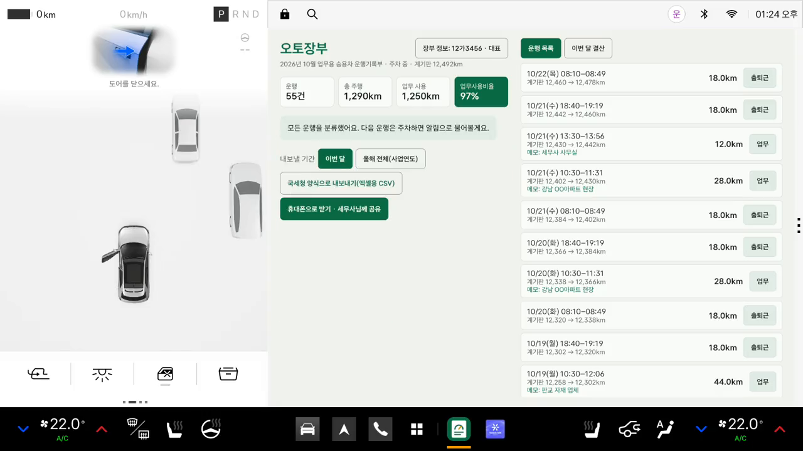

차 화면 오른쪽 앱 칸(1704 × 1204)에 맞춘 실제 크기 시안입니다. 기능은 지금 앱과 같고, 숫자·이름·장소는 예시입니다.

밤의 계기판처럼 어둡고 고급스럽게. 업무사용비율을 바늘 게이지로.
국세청 운행기록부 양식 그대로. 분류한 운행에는 도장을 찍습니다.
크고 굵은 숫자와 주황 한 가지. 한 달 운행을 띠 하나로.
차 계기판의 언어로 만든 어두운 화면입니다. 업무사용비율은 속도계 바늘처럼, 지금 계기판 거리는 기계식 적산계 숫자처럼 보여 줍니다.
세무사님이 받는 국세청 양식을 차 화면에서 그대로 봅니다. 방금 운행은 ‘결재 대기’로 올라오고, 분류하면 도장이 찍힙니다.
가장 중요한 숫자 하나를 가장 크게. 주황 한 가지 색과 굵은 글씨로 멀리서도 한눈에 읽히는 화면입니다.
A · B · C 중 하나를 말씀해 주세요. 섞어도 됩니다 — 예: “B의 장부 목록에 C의 주황색”.